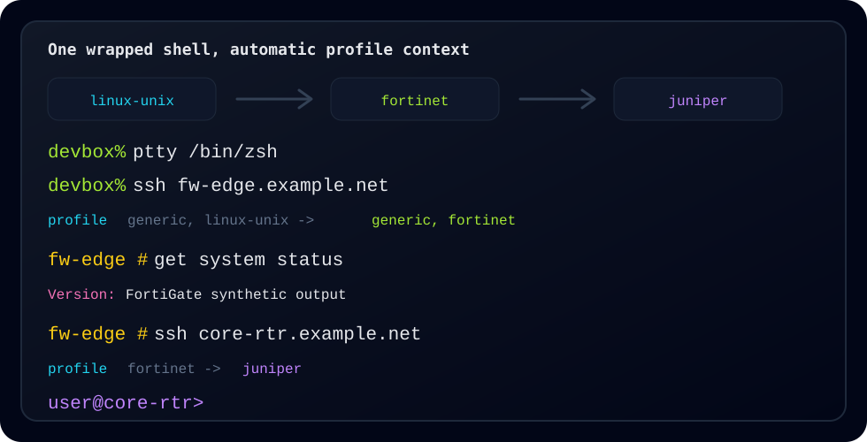

What this is
PrismTTY highlights output already flowing through shells, SSH sessions, pipes, and logs. It adds terminal color for prompts, interfaces, addresses, protocol state, counters, severity, and common vendor terms.
Network and Unix terminal highlighting
PrismTTY wraps shells, SSH sessions, pipes, and logs with fast PCRE2-powered highlighting tuned for network devices and Unix administration.

ptty ssh router.example.net
prismtty --profile cisco < show-tech.txt
prismtty --reload
Scope
PrismTTY highlights output already flowing through shells, SSH sessions, pipes, and logs. It adds terminal color for prompts, interfaces, addresses, protocol state, counters, severity, and common vendor terms.
It is not an NMS, a configuration management tool, a source of truth, a SIEM, a log platform, or a device inventory system. It does not log in, collect inventory, push configuration, or store operational data.
Built for real terminal work
Clean-room rules highlight interfaces, addresses, operational state, counters, prompts, syslog severity, and common vendor terms.
Start one wrapped shell with ptty /bin/zsh, then use normal
SSH, telnet, and console workflows without changing habits.
Load existing YAML rules, add native profiles, validate profile files, and reload long-running sessions after config changes.

Dynamic profile switching
PrismTTY observes login banners, prompts, and typed remote-jump commands. It can move from a local Unix shell into network device sessions while keeping normal command output from churning the selected profile.
Feedback wanted
Testing help is especially useful across the built-in profile set and custom profile files for other vendors, appliances, and terminal workflows.
Install
brew install inxbit/tap/prismttycargo install prismttyptty /bin/zshWorkflow
Run ptty around a shell, SSH command, or console tool.
Use built-in profile hints to recognize Unix and vendor prompts.
Render addresses, interfaces, state, counters, and severity in place.